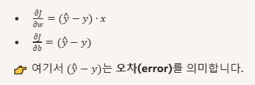
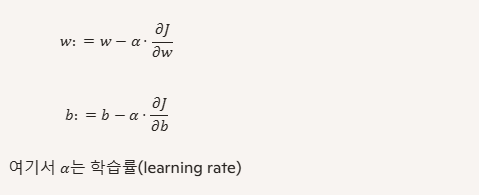
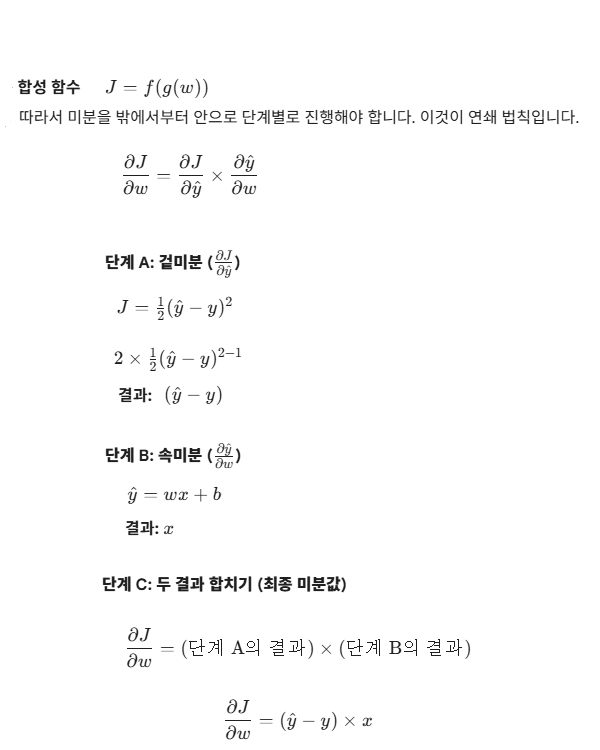
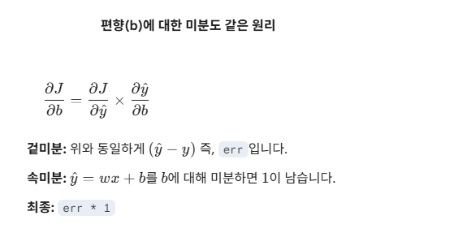
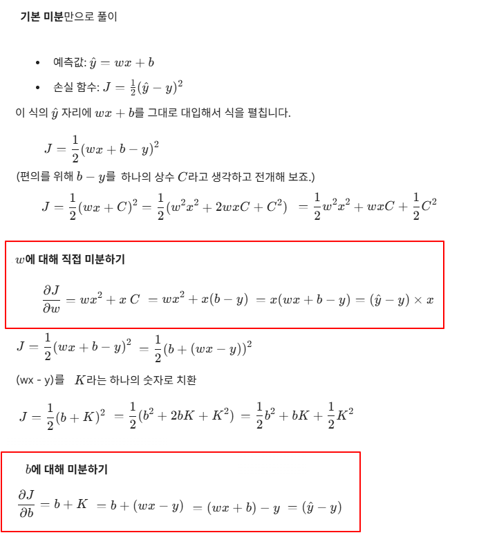

| SGD (Stochastic Gradient Descent)를 간단하게 파이썬으로 구현해 본다. Stochastic Gradient Descent (SGD, 확률적 경사 하강법)는 전체 데이터를 한꺼번에 계산하지 않는다. **매 단계에서 무작위로 선택된 하나의 데이터(또는 소규모 배치)**에 대해서만 기울기를 계산하여 가중치를 업데이트하는 방식이다. 가장 직관적인 예시인 선형 회귀(y_hat = wx + b) 문제를 해결하는 코드를 작성해 보자. import numpy as np
# 가상 데이터 (y = 2x + 1 관계) x = np.array([1, 2, 3, 4]) y = np.array([3, 5, 7, 9]) rate = 0.01 w = 1.0 b = 1.0 for epoch in range(1000): for x_i, y_i in zip(x, y): # 1. 순전파 (Forward): 예측값 계산 y_hat = x_i * w + b # 2. 오차 계산 err = y_hat - y_i # 3. 역전파 & 업데이트 (Backward & Update) w = w - rate * err * x_i b = b - rate * err if epoch % 200 == 0: print(f"Epoch {epoch}: w={w:.3f}, b={b:.3f}") print(f"\n최종 결과: y = {w:.2f}x + {b:.2f}") 결과) Epoch 0: w=1.270, b=1.092 Epoch 200: w=1.970, b=1.091 Epoch 400: w=1.991, b=1.027 Epoch 600: w=1.997, b=1.008 Epoch 800: w=1.999, b=1.002 최종 결과: y = 2.00x + 1.00
역전파에서 미분(Gradient 계산) 경사하강법에서는 𝑤, 𝑏를 업데이트하기 위해 손실 함수를 각각에 대해 미분한다.  파라미터 업데이트 규칙 경사하강법은 다음과 같이 파라미터를 갱신한다.  ChainRule을 사용하여 미분 해보겠습니다. ChainRule을 사용하지 않고 기본 전개식으로도 미분 해보겠습니다. |